Lecture 12: Evaluation
TL;DR:
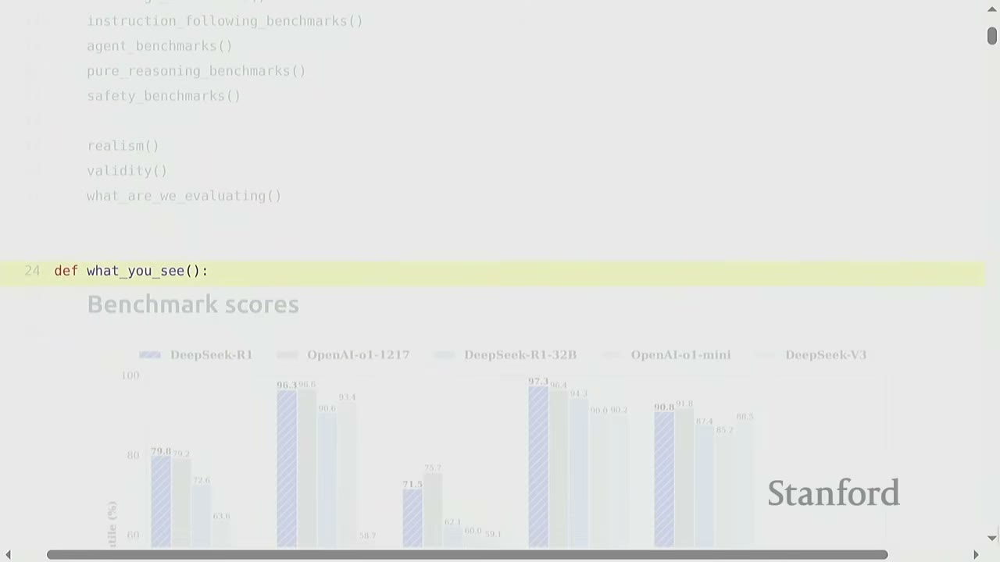
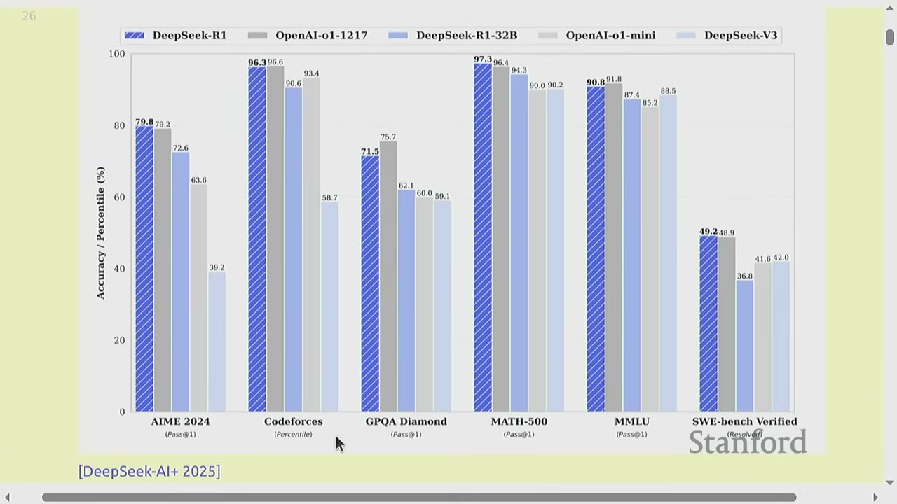
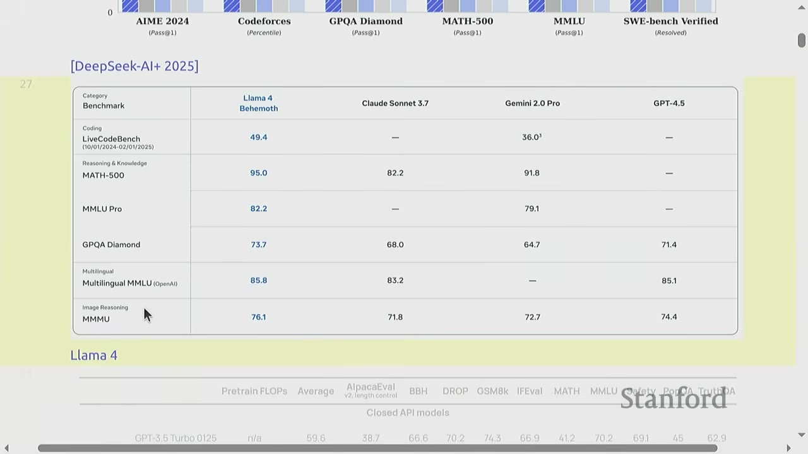
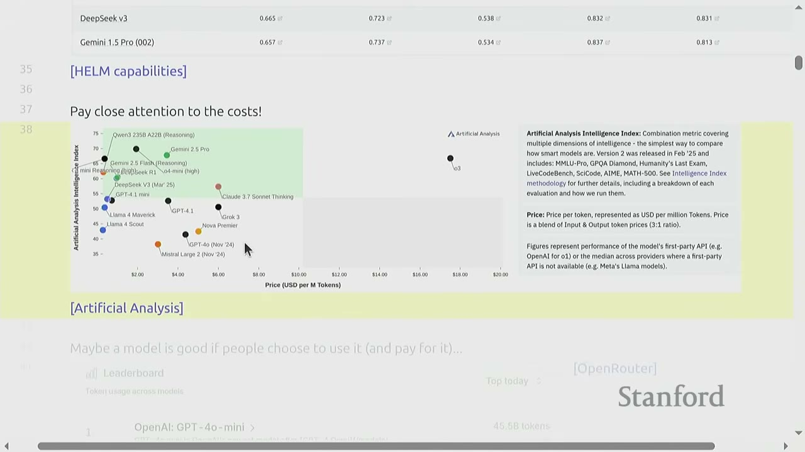
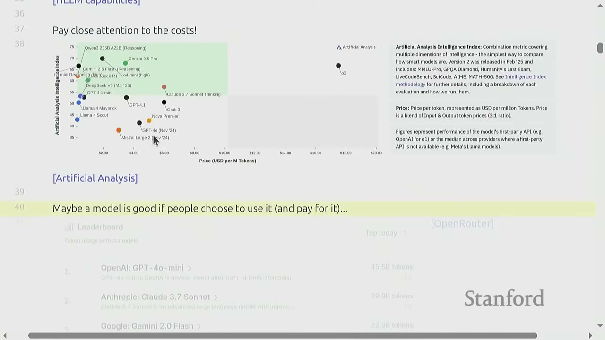
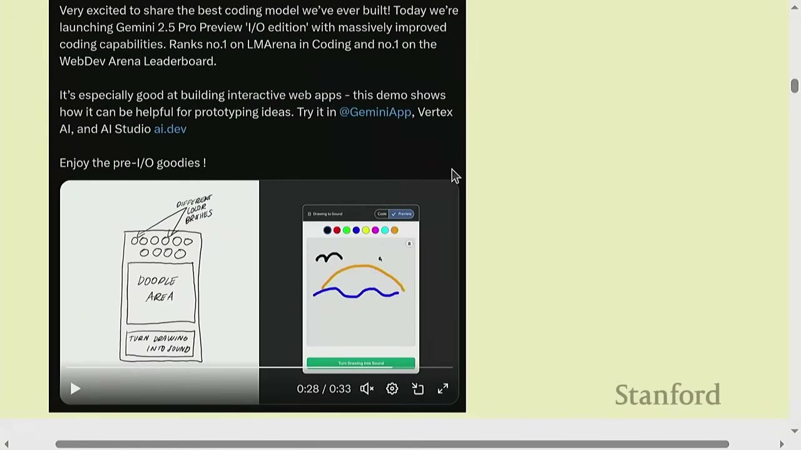
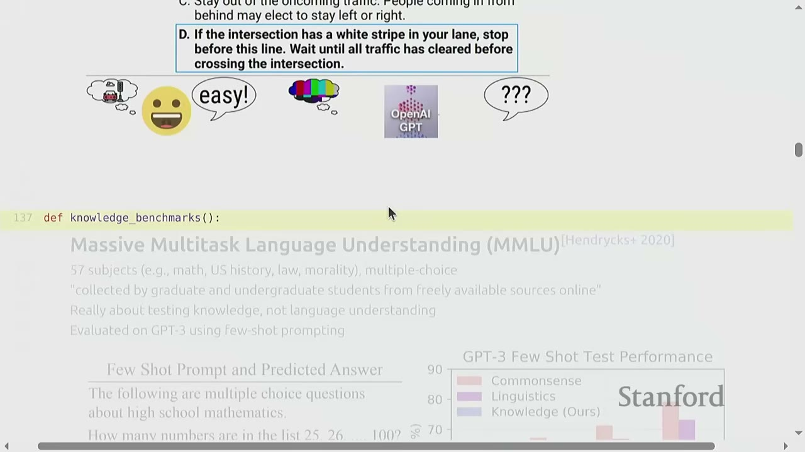
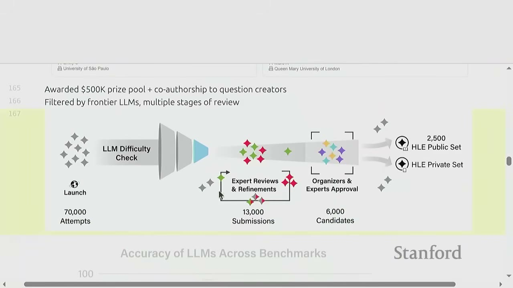
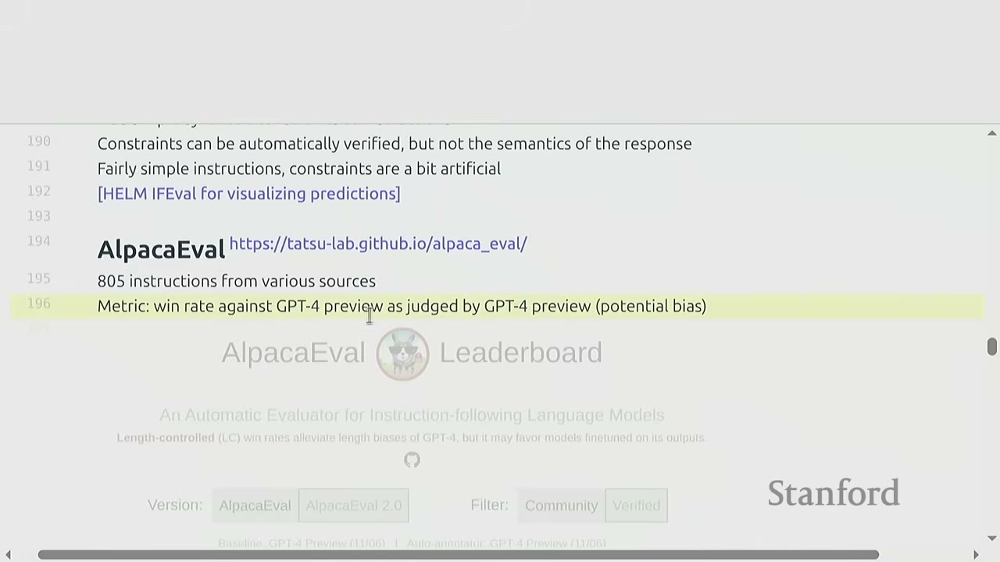
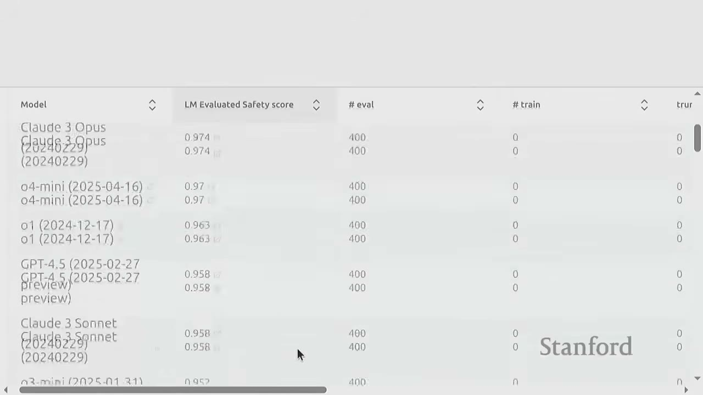
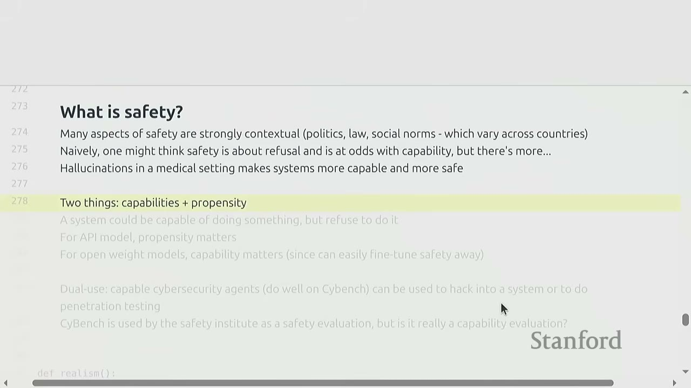
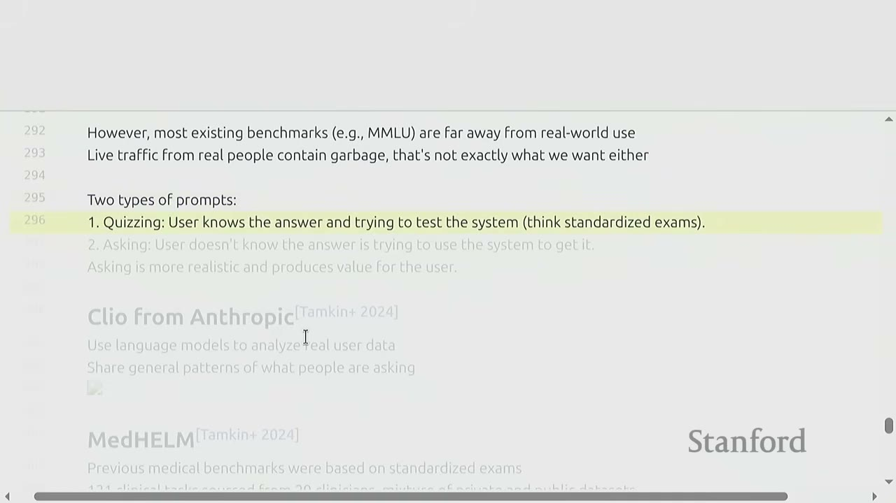
- Evaluation is a complex topic that goes beyond simple metrics, influencing how language models are built and used.
- There's no single "true" evaluation; the best approach depends on the specific question being asked (e.g., user decision, research, policy, model development).
- Key aspects of evaluation include inputs (prompts), how the model is called (prompting strategies, agentic systems), how outputs are evaluated (metrics, cost, error types), and how results are interpreted (generalization, model vs. method).
- Perplexity, while a foundational metric, has limitations and is being supplemented by task-specific and human-preference benchmarks.
- Challenges include train-test overlap, data quality, and defining safety in AI, highlighting the need for robust and transparent evaluation protocols.
Key concepts: - Perplexity - MMLU (Massive Multitask Language Understanding) - GPQA (Graduate-Level Google-Proof Q&A) - Humanity's Last Exam (HLE) - Instruction-following benchmarks (Chatbot Arena, IFEval, AlpacaEval, WildBench) - Agent benchmarks (SWEBench, CyBench, MLEBench) - Pure reasoning benchmarks (ARC-AGI) - Safety benchmarks (HarmBench, AIR-Bench, Jailbreaking) - Pre-deployment testing - Realism and Validity in evaluation - Train-test overlap and contamination
[00:00] Introduction to Evaluation The lecture begins by introducing evaluation as a seemingly simple but profoundly complex topic in language modeling. Mechanically, it's about assessing a fixed model's performance. However, the implications of how we evaluate models significantly influence their development and future.
[00:25] What You See: Current Landscape of Evaluation The current landscape of language model evaluation is characterized by a plethora of benchmarks and metrics.
- Benchmark Scores: Papers often report scores on various benchmarks like MMLU, AIME, Codeforces, Math 500, GPQA, GSM8K, etc. (e.g., DeepSeek, Llama 4, OLMo).
- Cost-Benefit Analysis: Websites like Artificial Analysis evaluate models based on a combination of an "intelligence index" (derived from multiple benchmarks) and the price per token. This helps visualize Pareto frontiers for models, showing trade-offs between performance and cost.
- User Preference/Usage: Platforms like OpenRouter track the number of tokens sent to different models, implicitly suggesting that models with higher usage are "better" because users choose them.
- Human Preference/Elo Ratings: Chatbot Arena allows users to interact with models and express pairwise preferences, which are then used to calculate Elo-like ratings, ranking models by perceived quality.
- "Vibes": Informal demonstrations on social media (e.g., X) showcasing impressive model capabilities.
[03:40] The Evaluation Crisis Andre Karpathy's tweet highlights a growing "evaluation crisis": - Traditional benchmarks like MMLU may be saturated or "gamed." - Chatbot Arena, while popular, has its own issues (e.g., reliance on API requests, prompt bombing, explicit use of rankings as training supervision). - There's a proliferation of benchmarks, but a lack of comprehensive, unbiased, and low-sample-size evaluations.
The overall sentiment is that the current state of evaluation is messy, and it's unclear which methods are truly reliable.
[04:40] How to Think About Evaluation Evaluation is not a mere mechanical process; it's a profound topic that shapes the future of language models. The choice of evaluation methods directly influences how models are built, as developers optimize for metrics.
[05:55] What's the Point of Evaluation? There is no single "true" evaluation. The purpose of evaluation depends entirely on the question one is trying to answer. 1. User/Company: To make a purchase decision (e.g., choosing a customer service chatbot). 2. Researcher: To measure the raw capabilities of a model and understand scientific progress in AI. 3. Policymaker/Business: To objectively understand the benefits and harms of a model for regulatory or business reasons. 4. Model Developer: To get feedback for improving the model during its development cycle.
In each case, there's an abstract goal that needs to be translated into a concrete evaluation.
[08:05] Framework for Evaluation A simple framework for thinking about evaluation involves four key questions: 1. What are the inputs? (The prompts) 2. How do you call the language model? 3. How do you evaluate the outputs? 4. How to interpret the results?
Let's break these down:
1. What are the inputs? - Use cases covered: Do the prompts represent a broad range of real-world use cases, or are they narrow and specific? - Representation of difficult inputs: Do the inputs challenge the model's limits, or are they easy, "vanilla" cases? - Inputs adapted to the model: In multi-turn (chatbot) settings, inputs are inherently adapted. For red-teaming, adapting inputs can be more efficient. However, adapting inputs makes cross-model comparison difficult.
2. How do you call the language model? - Prompting strategy: Few-shot, zero-shot, chain-of-thought, tool use, RAG, etc. Different strategies can significantly impact performance. Language models are very sensitive to prompts. - Evaluating the language model vs. agentic system: Model developers might focus on the raw language model, while users care about the overall system performance (including scaffolding, tools, etc.).
3. How do you evaluate the outputs?
- Reference outputs: Are the reference outputs used for evaluation error-free? (Often, they are not.)
- Metrics used: Which metrics are appropriate (e.g., pass@k for code generation)?
- Cost factor: How is inference/training cost factored in? (Pareto frontiers are often useful here.)
- Asymmetric errors: Are all errors equally bad? How are critical errors (e.g., hallucinations in medical settings) handled?
- Open-ended generation: How do you evaluate responses without a clear ground truth (e.g., "Write me a compelling story")?
4. How to interpret the metrics? - Interpreting a number: What does a score (e.g., 91%) truly mean? Is it sufficient for deployment? - Assessing generalization: How do we know if the model has truly learned or just memorized? This involves confronting train-test overlap. - Evaluating the final model vs. the method: In research, the goal is often to evaluate a new method, not just a specific model instance. This requires careful controls.
[12:20] Perplexity Perplexity is a fundamental metric in language modeling. - Definition: A language model defines a probability distribution $p(x)$ over sequences of tokens. Perplexity, $PPL(D) = (1 / \prod_{x \in D} p(x))^{1/|D|}$, measures how well the model assigns high probability to a given dataset $D$. - Pre-training: During pre-training, models minimize perplexity on the training set. - Evaluation: The obvious way to evaluate a language model is to measure its perplexity on a held-out test set, typically with an i.i.d. split.
[17:00] Perplexity in the 2010s In the 2010s, language modeling research heavily relied on perplexity. - Standard datasets: Penn Treebank (WSJ), WikiText-103 (Wikipedia), 1 Billion Word Benchmark (from machine translation data like Europarl, UN news). - Research approach: Researchers would train models on a designated training split and evaluate on a designated test split, reporting perplexity. - Advancements: Papers like Jozefowicz et al. (2016) showed dramatic reductions in perplexity (e.g., from 51.3 to 30.0) using CNNs + LSTMs on the 1 Billion Word Benchmark. This was a significant achievement for advancing the field.
[19:00] GPT-2 and the Shift in Evaluation GPT-2 (Radford et al., 2019) marked a turning point. - Training data: GPT-2 was trained on a massive 40GB web text dataset (websites linked from Reddit). - Evaluation: It was evaluated directly on standard perplexity benchmarks without fine-tuning (zero-shot). - Results: GPT-2 achieved state-of-the-art perplexity on many smaller benchmarks (like Penn Treebank) without specific training on them, demonstrating strong generalization. For larger datasets (like 1 Billion Word Benchmark), direct training was still superior.
[20:40] Discussion on Train-Test Overlap The question arises: if GPT-2 was trained on web data, how do we know it wasn't implicitly trained on the test sets (e.g., Penn Treebank)? - Decontamination: Typically, researchers perform decontamination by removing any test set data (documents, paragraphs, n-grams) that overlap with the training data. - Subtleties: This process is complex, as near-duplicates or paraphrases might still exist, leading to potential contamination. - Conservative approach: Given the vastness of web data, if a model performs well on a test set even after careful decontamination, it's generally considered a valid result.
[22:20] Perplexity vs. Downstream Task Accuracy Since GPT-2 and GPT-3, language modeling papers have shifted focus towards downstream task accuracy. However, perplexity remains useful for several reasons: - Smoother for scaling laws: Perplexity provides a smoother signal than downstream task accuracy, making it easier to fit scaling curves. - Universal measure: Perplexity is "universal" in the sense that it pays attention to every token in a dataset, potentially capturing nuances that task-specific accuracy might miss. It's harder to game because it requires the model to accurately predict probabilities across the entire vocabulary. - Conditional perplexity: Perplexity can also be measured conditionally on downstream tasks (e.g., probability of the correct answer given the prompt), which is being explored in recent scaling law papers (Bhagias et al., 2024).
[25:25] Caveats of Perplexity Evaluation - Trust in model provider: When running a leaderboard for perplexity, the evaluator needs to trust that the model provider is correctly computing probabilities that sum to one. If the model has a bug or intentionally misreports probabilities, the perplexity score can be misleading. - Perplexity maximalist view: - If the true data distribution is $T$ and the model is $P$, the best possible perplexity is the entropy of $T$, achieved when $P=T$. - If a model achieves $P=T$, it has effectively "solved" all tasks and reached AGI. - Caveat: Pushing down perplexity might not be the most efficient way to reach AGI, as it might involve optimizing for parts of the distribution that don't matter for specific tasks.
[30:00] Things That Are Spiritually Perplexity Several tasks resemble perplexity but are not identical: - Cloze tasks (LAMBADA): Given a context, the model predicts a missing word. These tasks often require long-range context and have been largely "saturated" by modern language models. - Common sense reasoning (HellaSwag): Given a sentence, the model chooses the most plausible completion from several options. This is essentially measuring the likelihood of different continuations.
These tasks are effectively solved by models that are good at perplexity, as they fundamentally test the model's ability to predict the next token or sequence.
[31:15] Train-Test Overlap in "Spiritually Perplexity" Tasks A common issue in these tasks is train-test overlap. For example, HellaSwag data was mined from ActivityNet and WikiHow. If the training data for a model includes content from WikiHow, then the model might perform well on HellaSwag not due to true reasoning but due to memorization. Researchers typically try to decontaminate datasets, but near-duplicates or paraphrases can still exist.
[32:00] Knowledge Benchmarks These benchmarks assess a model's factual knowledge and understanding across various domains.
[32:50] MMLU (Massive Multitask Language Understanding) - Description: A multiple-choice question answering benchmark covering 57 subjects (e.g., math, US history, law, morality). - Origin: Introduced in 2020 (Hendrycks et al.) shortly after GPT-3's release. - Data: Questions collected from graduate/undergraduate students and freely available online sources. - Purpose: Primarily tests knowledge, not language understanding (as the lecturer argues, based on personal experience). - Evaluation: Originally evaluated GPT-3 using few-shot prompting (providing examples of questions and answers in the prompt). - Few-shot prompting: A simple instruction, followed by examples demonstrating the desired format, then the final question. - Impact: This was crucial before instruction tuning, as models would often generate irrelevant responses without examples. - Helm MMLU: The Helm framework provides a leaderboard for MMLU, allowing users to inspect individual predictions and model performance across subjects. - Prompting strategy: Helm uses a standardized prompt strategy (e.g., 5-shot) which might yield lower scores than highly optimized prompts (e.g., using chain-of-thought or ensembling). - Interpretation: A high MMLU score from a base model (trained without specific instruction tuning) suggests strong general intelligence, as it indicates the model has learned a vast amount of world knowledge without explicit instruction.
[47:00] MMLU-Pro - Description: A more robust and challenging version of MMLU (Wang et al., 2024). - Improvements: - Removed noisy/trivial questions from the original MMLU. - Expanded from 4 choices to 10 choices, making guessing harder. - Evaluated using chain-of-thought (CoT) prompting, which gives models more "thinking" time and often improves accuracy. - Impact: MMLU-Pro scores are generally lower than MMLU, indicating that models are not yet saturated on this harder benchmark. It's becoming a new standard for evaluating frontier models.
[54:00] GPQA (Graduate-Level Google-Proof Q&A) - Description: A challenging benchmark of multiple-choice questions written by PhD contractors from Upwork (Rein et al., 2023). - Difficulty: Questions are at a PhD level in biology, physics, and chemistry. - Validation Process: An elaborate process involving question writers, expert validators (who provide feedback and explanations), and non-expert validators (who spend significant time trying to answer, even with Google). - Results: Experts achieve ~65% accuracy. Non-experts (even with Google) achieve ~30% accuracy. GPT-4 achieved 39% accuracy at the time of release. - Interpretation: The "Google-proof" aspect means that even with extensive web search, non-experts struggle to answer, indicating the questions require deep understanding, not just information retrieval. - Helm GPQA: The Helm leaderboard shows that current frontier models (e.g., 03) achieve ~75% accuracy with CoT, demonstrating significant progress since GPQA's release.
[1:01:00] Humanity's Last Exam (HLE) - Description: A multimodal, multi-subject, multiple-choice + short-answer benchmark (Phan et al., 2025). - Scale: 2500 questions across 100 subjects. - Purpose: Designed to be the "final closed-ended academic benchmark at the frontier of human knowledge," aiming to push the limits of language models. - Data Creation: Involved a complex process: 1. Awarded $500K prize pool + co-authorship to question creators. 2. LLMs were used to filter out "too easy" questions. 3. Multiple stages of expert review and refinement. - Results: Current frontier models (e.g., 03) achieve ~20% accuracy on HLE, indicating it's still a very challenging benchmark.
[1:04:40] Instruction-Following Benchmarks These benchmarks evaluate a model's ability to follow instructions, a capability popularized by ChatGPT. The challenge is to evaluate open-ended responses.
[1:05:00] Chatbot Arena - Description: An open platform for evaluating LLMs by human preference (Chiang et al., 2024). - How it works: 1. Random internet users type a prompt. 2. They receive responses from two anonymous models. 3. Users rate which response is better. 4. Elo scores are computed based on pairwise comparisons, ranking models. - Features: Live (not static) inputs, can accommodate new models dynamically. - Challenges: - Protocol issues: The "leaderboard illusion" (paper by Zheng et al., 2023) highlights that some model providers might game the system (e.g., multiple submissions, privileged access). - Input distribution: The prompts come from random internet users, which might not represent a desired or controlled distribution. - Human bias: Human preferences can be subjective and inconsistent.
[1:08:00] IFEval (Instruction-Following Eval) - Description: A benchmark that narrowly tests a model's ability to follow constraints (Zhou et al., 2023). - How it works: 1. Define various constraints (e.g., keywords to include/exclude, length limits, formatting rules like number of paragraphs or JSON). 2. Add these synthetic constraints to instructions for open-ended generation tasks. 3. Automatically verify if the model's response adheres to the constraints using a simple script. - Purpose: Tests the model's "compliance" rather than the semantic quality of the response. - Challenges: - Partial evaluation: It only checks constraint adherence, not the overall quality or meaning of the generated text. - Gameable: Models can be optimized to strictly follow constraints without necessarily improving semantic quality.
[1:10:00] AlpacaEval - Description: An automatic evaluator for instruction-following language models (Dubois et al., 2023). - How it works: 1. Uses 805 instructions from various sources. 2. Metric: Win rate against GPT-4 preview, judged by GPT-4 itself. - Challenges: - Potential bias: Using an LLM (GPT-4) as a judge introduces potential bias towards responses that GPT-4 itself would prefer. - Gaming: Early versions were gamed by models generating longer responses, which GPT-4 tended to prefer. This was corrected with a "length-corrected" win rate. - Correlation: AlpacaEval's win rates correlate well with Chatbot Arena, suggesting both provide similar information about model performance.
[1:11:00] WildBench - Description: Another benchmark using LLMs as judges (Lin et al., 2024). - How it works: 1. Sources 1024 examples from 1M human-chatbot conversations. 2. Uses GPT-4 Turbo as a judge with a checklist (like CoT for judging) + GPT-4 as a judge. 3. Correlates well (0.95) with Chatbot Arena.
[1:12:00] Agent Benchmarks These benchmarks evaluate models that require tool use (e.g., running code, accessing the internet) and involve iterating over a period of time. An agent consists of a language model and an "agent scaffolding" (programmatic logic for deciding how the LM is used).
[1:12:40] SWEBench - Description: Evaluates agents on software engineering tasks (Jimenez et al., 2023). - How it works: 1. Given 2294 tasks across 12 Python repositories. 2. Given a codebase and a GitHub issue description. 3. The agent must submit a Pull Request (PR) that resolves the issue. 4. Evaluation metric: Unit tests must pass. - Results: Current agent accuracies are still relatively low (e.g., sub-20% for passing any medal threshold), but improving.
[1:13:20] CyBench - Description: A framework for evaluating cybersecurity capabilities (Chan et al., 2024). - How it works: 1. Agents participate in Capture The Flag (CTF) competitions. 2. The agent has access to a server and must hack into it to retrieve a secret key. 3. Agent architecture: A standard "Act-Execute-Update" loop where the LM thinks, generates commands, executes them in an environment, observes the results, and updates its memory. - Results: Accuracies are still low (e.g., ~20% for 03-mini), but models are showing progress in solving tasks that took humans significant time (e.g., 42 minutes for 03-mini).
[1:14:00] MLEBench - Description: Evaluates agents on Kaggle-like competitions (Chan et al., 2024). - How it works: 1. 75 Kaggle competitions. 2. The agent is given a competition description and a dataset. 3. The agent must write code, train a model, debug, tune hyperparameters, and submit a solution. 4. Evaluation metric: Kaggle's scoring system (e.g., accuracy, medals). - Results: Accuracies are still low (e.g., sub-20% for achieving any medal), but improving.
[1:14:30] Pure Reasoning Benchmarks These benchmarks aim to isolate and measure pure reasoning ability, distinct from linguistic understanding or world knowledge.
[1:14:50] ARC-AGI (Abstract Reasoning Corpus - AGI) - Description: A challenge introduced by François Chollet (2019) to capture a "more pure form of intelligence" that isn't just memorizing facts. - How it works: 1. Models are given visual patterns (grids of colored cells) and must infer the underlying rule to complete new patterns. 2. No language description is provided. - Purpose: Designed to be easy for humans but hard for current AI, testing abstract reasoning and generalization. - Results: Traditionally, LLMs performed very poorly on these tasks (e.g., GPT-4o at ~0% accuracy). However, recent models like 03 are starting to show significant progress, achieving ~80% accuracy on some tasks. - Cost: Solving these tasks can be computationally expensive (e.g., hundreds of dollars per task for 03).
[1:15:50] Safety Benchmarks These benchmarks assess the safety and ethical behavior of language models.
[1:16:00] What does safety mean for AI? - Contextual: Safety is strongly contextual, depending on politics, law, social norms, and varies across countries. - Beyond refusal: Safety is broader than just refusal (e.g., reducing hallucinations in medical settings makes systems safer). - Capabilities vs. Propensity: - Capabilities: The ability of a system to do something (e.g., cause harm). - Propensity: The likelihood of a system to do something (e.g., refuse to cause harm). - For API models, propensity matters (if it refuses, it's fine). - For open-weight models, capabilities matter more, as fine-tuning can easily bypass safety mechanisms. - Dual-use issues: Cybersecurity agents (like CyBench) can be used to hack systems (malicious use) or to perform penetration testing (beneficial use).
[1:16:40] HarmBench - Description: A benchmark for evaluating harmful behaviors that violate laws or norms (Mazeika et al., 2024). - How it works: 1. Identifies 510 harmful behaviors. 2. Prompts LLMs to perform these behaviors. 3. Evaluates if the model complies or refuses. - Results: Some models (e.g., 03) show high refusal rates (~90%), while others (e.g., DeepSeek) are more compliant.
[1:17:20] AIR-Bench - Description: A benchmark based on regulatory frameworks and company policies (Zeng et al., 2024). - How it works: 1. Builds a taxonomy of 314 risk categories (e.g., legal, social, technical risks). 2. Evaluates LLMs against prompts related to these risks. - Purpose: Aims to ground safety evaluation in real-world regulatory and policy contexts.
[1:18:00] Jailbreaking - Description: The process of bypassing a model's safety mechanisms to elicit harmful responses. - Challenge: LLMs are trained to refuse harmful instructions, but clever prompting techniques can bypass these safeguards. - Research: Papers like Zou et al. (2023) developed "Greedy Coordinate Gradient" (GCG) to automatically optimize prompts to bypass safety. This technique works on open-weight models (Llama) and transfers to closed models (GPT-4). - Implications: The ability to jailbreak models highlights the ongoing cat-and-mouse game between model developers and malicious actors, and the need for robust safety interventions.
[1:19:00] Pre-deployment Testing - Collaborative effort: US Safety Institute + UK AI Safety Institute + other countries are working together. - Protocol: Companies (e.g., Anthropic, OpenAI) voluntarily give early access to their models (pre-release) to safety institutes. - Process: Institutes run safety evaluations, generate reports, and provide feedback to the companies to inform deployment. - Status: This is a voluntary, non-binding protocol for now.
[1:19:30] Realism - Challenge: Most existing benchmarks (e.g., MMLU) are far from real-world use cases. - Live traffic: While real-life traffic provides realistic inputs, it often contains "garbage" (spammy, non-serious utterances) that are not the target distribution for evaluation. - Types of prompts: - Quizzing: User knows the answer and is testing the system (standardized exams). - Asking: User doesn't know the answer and is trying to use the system to get it. - Asking prompts: More realistic and produces value for the user. Standardized exams are not realistic but can be helpful for certain types of evaluation.
[1:20:00] Clio from Anthropic - Description: Uses language models to analyze real user data (Tamkin et al., 2024). - How it works: 1. Takes real user conversations with LLMs. 2. Uses LLMs to cluster these conversations and identify patterns of use. - Purpose: To understand how people are actually using LLMs in the wild, including common use cases (e.g., coding, education) and safety-related issues.
[1:20:20] MedHelm - Description: A project focused on medical benchmarks (Tamkin et al., 2024). - How it works: 1. Identifies 121 clinical tasks sourced from 29 clinicians. 2. Creates a wide suite of benchmarks based on private and public medical datasets. - Challenge: Realism and privacy are often at odds, as realistic medical data is sensitive and cannot be publicly hosted.
[1:20:50] Validity - Core question: How do we know our evaluations are valid? - Train-test overlap: - Machine Learning 101: Don't train on your test set. - Pre-foundation models: Benchmarks like ImageNet and SQuAD had well-defined train-test splits. - Nowadays: Models are trained on the internet, and developers don't always disclose their training data, making it difficult to verify train-test separation. - Route 1: Infer train-test overlap: Researchers are developing methods to infer if a model was trained on a test set by observing its behavior (e.g., exploiting exchangeability in the benchmark, Oren et al., 2023). - Route 2: Encourage reporting norms: Language model developers should report train-test overlap (Zhang et al., 2024), including confidence intervals.
- Dataset quality: Many benchmarks have quality issues. For example, SWEBench had errors, and many math benchmarks contain noise or mislabeled data. This can lead to misleading performance metrics.
[1:21:40] What Are We Even Evaluating? - Fundamental question: What are the rules of the game? - Shift in focus: Previously, we evaluated methods (e.g., new architectures, learning algorithms) using standardized train-test splits. - Today: We are evaluating systems (e.g., LLMs with various prompting strategies, tool use, agentic scaffolding) where "anything goes." - Exceptions: Some competitions (e.g., nanoGPT speedrun, DataComp) still focus on specific, fixed rules to encourage algorithmic innovation. - Conclusion: It's crucial to define the rules of the game for any evaluation and to clearly understand the purpose of the evaluation.
Practical takeaways: - Context is King: The "goodness" of a model is relative to the specific use case and question being asked. Avoid one-size-fits-all evaluation. - Beyond Single Metrics: Relying solely on perplexity or simple accuracy can be misleading. Consider a broader set of metrics, including cost, error types, and human preferences. - Beware of Train-Test Contamination: With models trained on vast internet data, ensuring true generalization is challenging. Always question the source and overlap of evaluation data. - Transparency and Reproducibility: Clear protocols for evaluation, including prompt strategies, model access, and data handling, are essential for valid comparisons. - Embrace Diverse Evaluation Methods: Combine traditional benchmarks with human preference, agentic tasks, and safety evaluations to get a holistic view of model capabilities and risks.
Open questions / things to remember: - How to design robust benchmarks that are not easily gameable, especially for open-ended generation. - How to effectively evaluate agentic systems that involve complex interactions with tools and environments. - How to define and measure "safety" in AI in a way that is both comprehensive and actionable, considering its contextual nature. - The tension between realism (evaluating on real-world data) and privacy (protecting sensitive user information). - The ongoing debate about whether current evaluation methods truly capture "intelligence" or merely test memorization and pattern recognition.